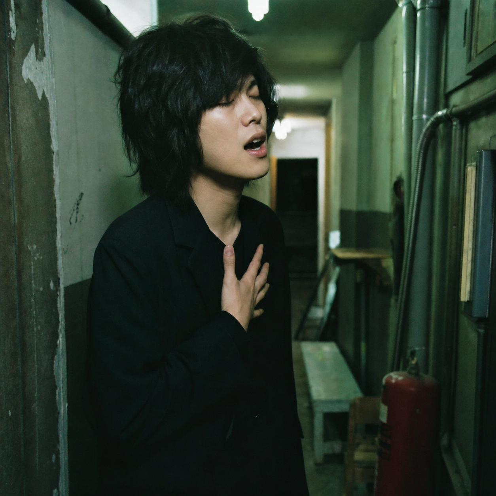
02 —廊下の隅で、声を出す。誰にも聴かせるつもりのない、一番素の声。
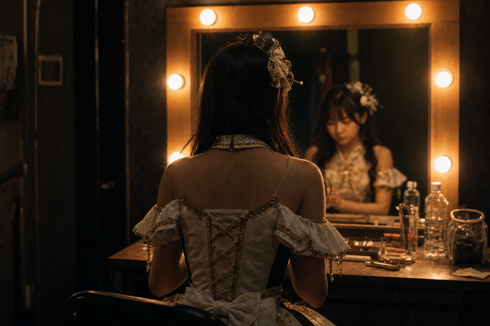
観客が決して見ない、本番前の楽屋。汗。ネタ合わせ。発声。その「見せていない時間」こそ、ファンが一番欲しがっている。Lapsell は、練習の時間を収益に変える。
ステージの上のあなたは、いつも完成されている。
でも、ファンが本当に見たいのは、
その手前にある時間かもしれない。
まだ荒削りな、鏡の前の10秒。
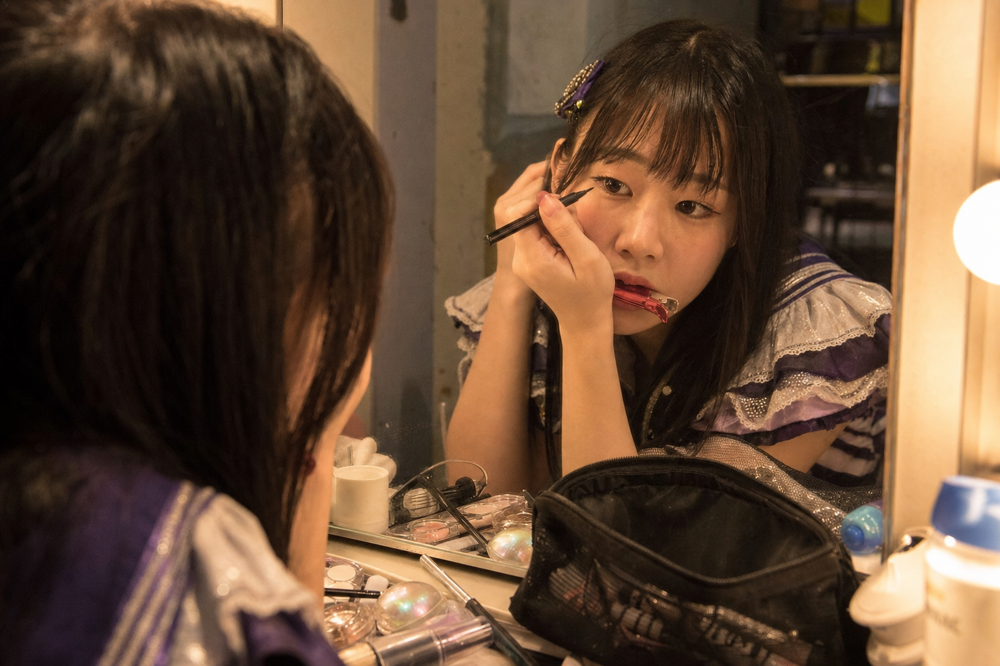

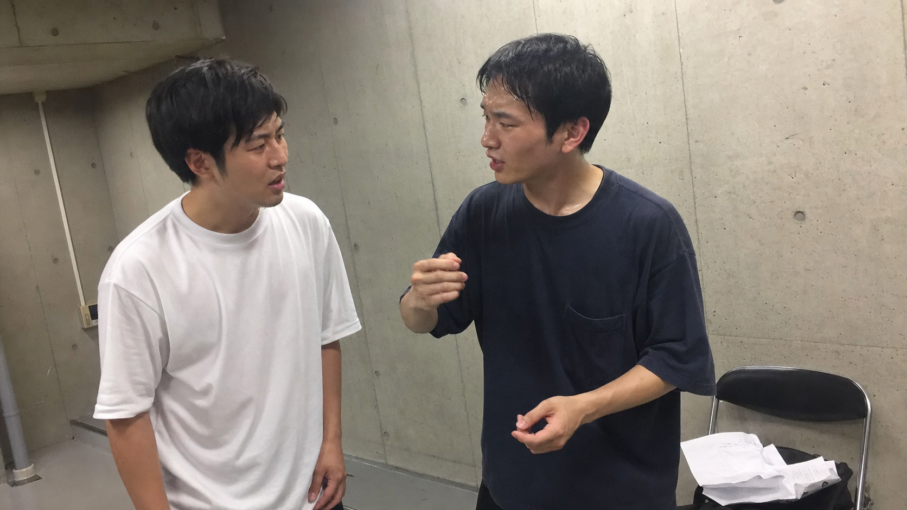
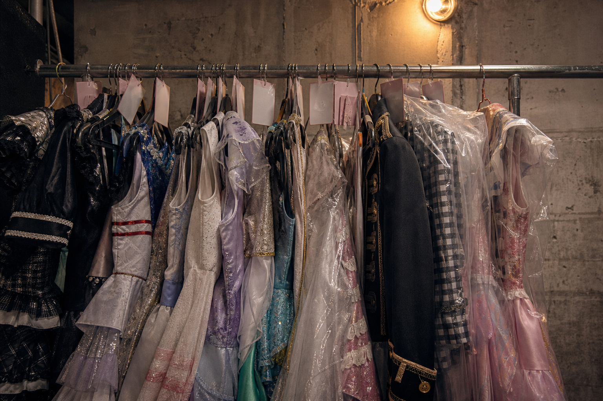
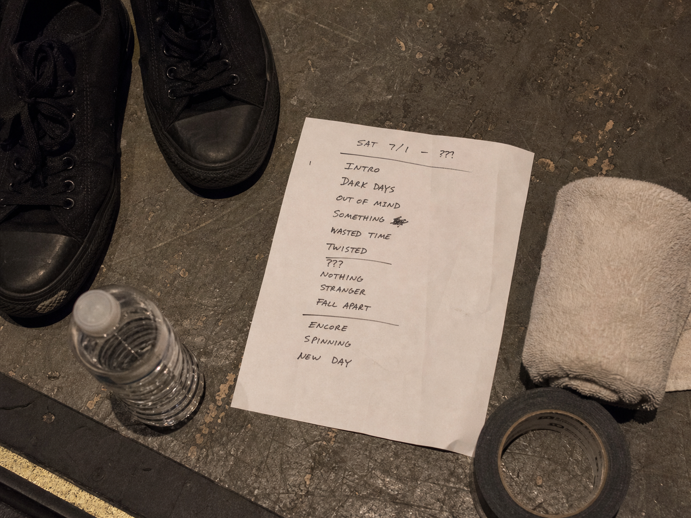
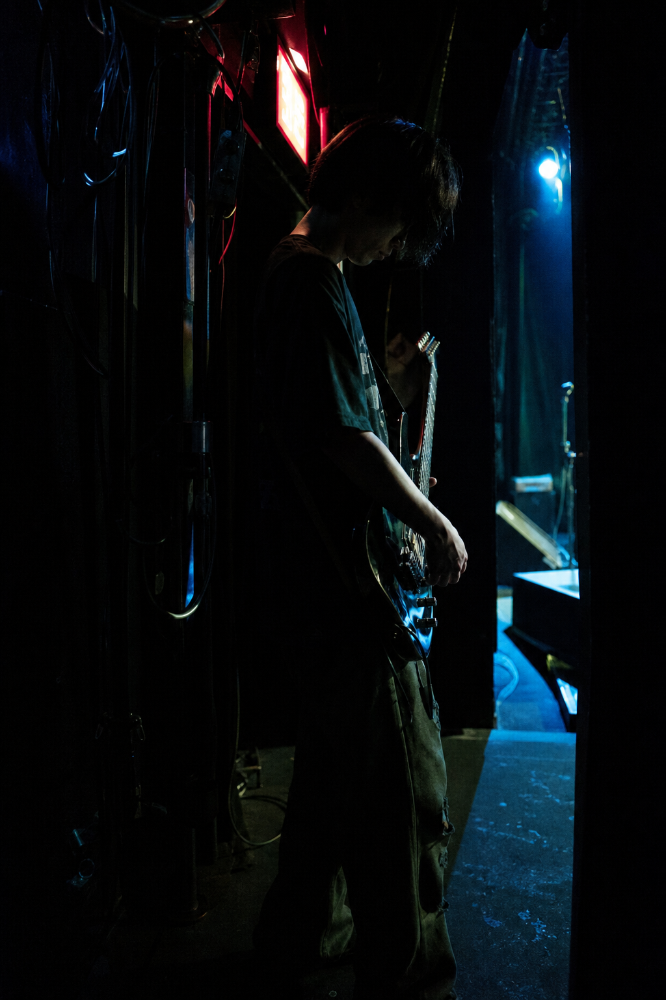
舞台袖で出番を待つ、この一回きりの時間。ライブが終われば消えてしまう。だからこそ、その一瞬を欲しがるファンがいる。
Lapsell なら、この時間を撮って、そのまま商品にできる。編集はいらない。スマホ1台で足りる。
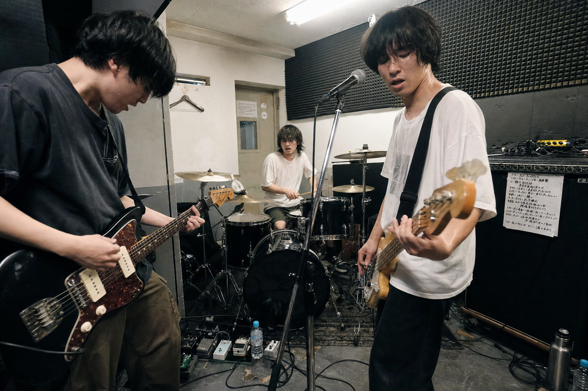
撮った映像は、約10秒ずつの短い断片に自動で分割される。その一片一片が、購入者へランダムに、ひとつずつ配られる。
同じ映像でも、誰ひとり同じ断片は受け取らない。あなたの練習の10秒が、世界に1つの「動く一点物」になる。
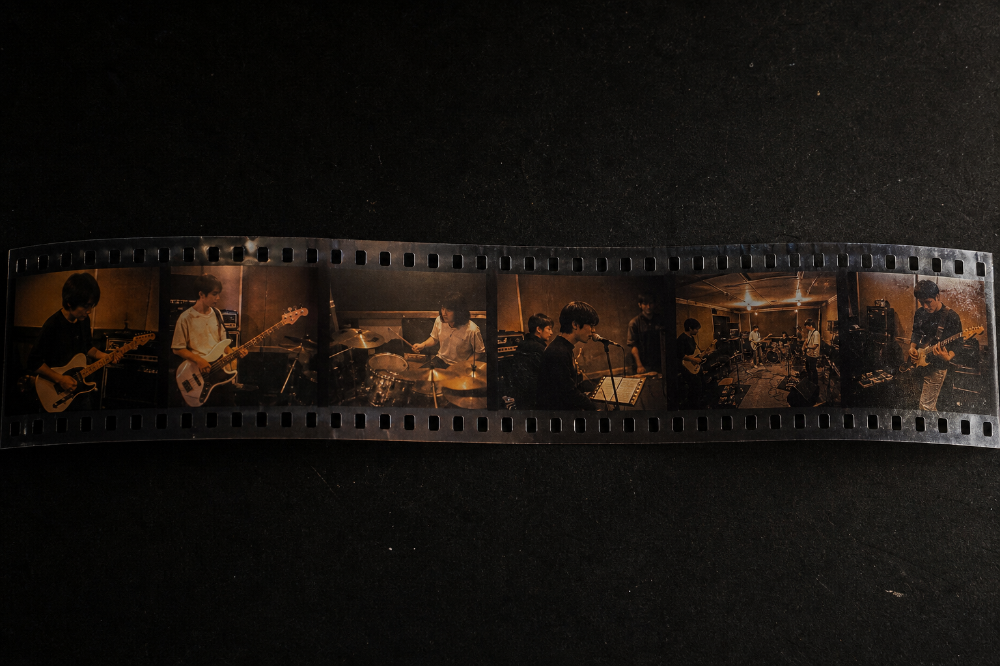
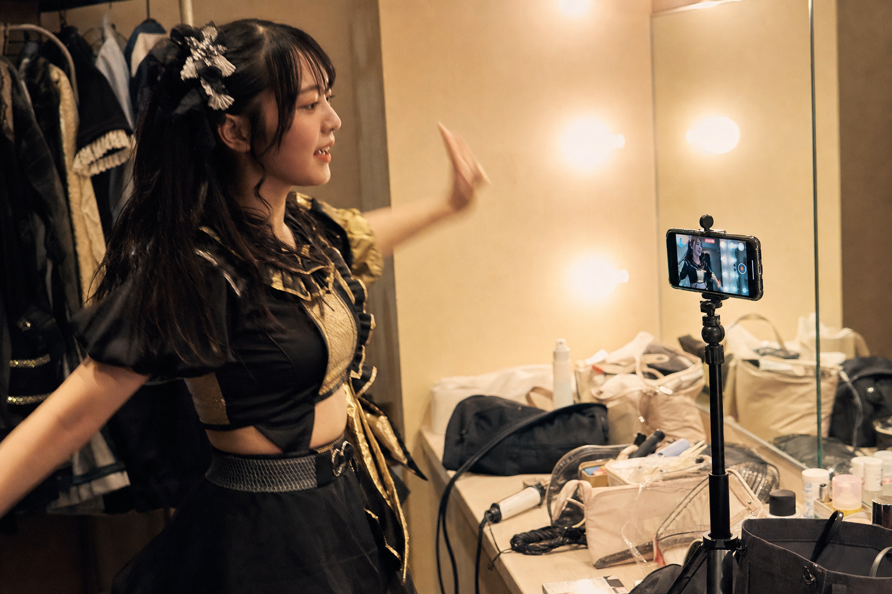
中身は、買った時点ではまだ撮影されていない。「これからやる練習の時間枠」を先に売り、当日撮って、届ける。この順番が Lapsell の仕組みです。
これからやる練習の時間枠を出品します。日時・価格・販売枠数（＝配布する本数）・1本の長さを決めるだけ。
ファンは時間枠を購入します。中身はまだ撮られていないので、届くまで何が来るかは分からない。この「待つ時間」も含めて価値になります。
当日、いつもの練習をスマホで撮るだけ。編集は不要です。楽屋でも、スタジオでも、舞台袖でも。
撮った映像をアップすると、約10秒ずつの短い断片に自動で分割されます。手作業はありません。
配布される前に、中身を自分でチェック。本当にまずい「事故」の瞬間だけ非公開にできます。該当者には自動で返金。だから、ライブ配信と違って世に出したくない瞬間は世に出ません。
承認された断片が、購入者へランダムかつ一意に割り当てられます。誰も同じものは受け取りません。
ファンは自分だけの断片を受け取り、手元に保有します。世界に1つの、あなたの裏側の10秒。
言葉だけでは分かりにくい所を、実際のアプリ画面で。出品から、当日の撮影、公開前チェック、そしてファンが受け取るまで。楽屋の暗がりの中で、電球の光だけを頼りに操作する——そんな画面設計になっています。
あなたに割り当てられた、約10秒の裏側。
タップして開封します。
ファンはすでに、チェキや生写真、ライブ物販に本気でお金を払っています。「本人の素」「世界に1つ」「つながり」に価値を感じているからです。
あなたの裏側の断片は、それと同じ理由で買われます。しかも、動いていて、本物で、他の誰も持っていない。
今はまだ、小さな箱でやってる。— 下積みの時間は、あとから価値になる。M!LK が結成11年で紅白に立ったように。
でも 「あの頃の練習を持っている」 という理由で、
ずっと応援してくれる人がいる。
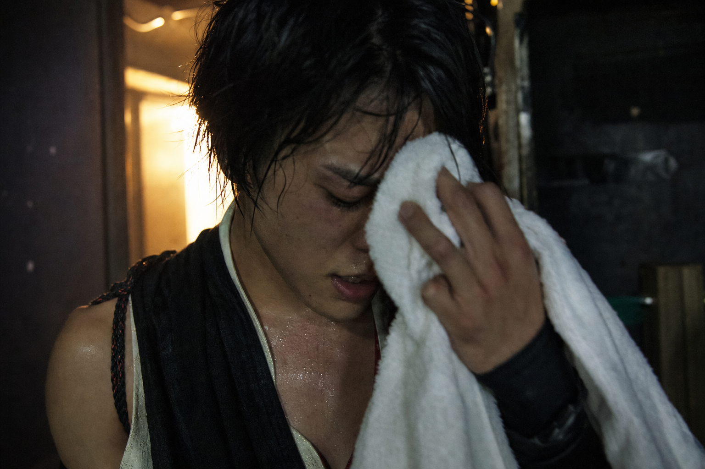
売れなければ費用はかかりません。撮るのはいつもの練習。捨てていた時間が、そのまま収益源になります。だから、ノーリスクで始められます。
本当に、私の練習なんて売れるの?
ファンはすでにチェキや生写真に日常的にお金を払っています。求められているのは完成度ではなく「本人の素」「世界に1つ」であること。裏側の時間は、まさにそれです。
まずい瞬間が世に出たら怖い。
Lapsell は撮影後にアップロードする仕組みです。配布の前に自分で中身を確認し、事故の瞬間だけ非公開にできます（該当者には自動返金）。ライブ配信のような「その場で流れる」リスクはありません。
編集の技術がない。
編集は不要です。撮った映像をアップすれば、約10秒の断片へ自動で分割されます。あなたがやるのは、いつもの練習をスマホで撮ることだけ。
同じ映像を配って、価値が薄まらない?
薄まりません。断片は購入者へ一意に割り当てられ、誰ひとり同じものを受け取りません。全員が「世界に1つ」を持ちます。
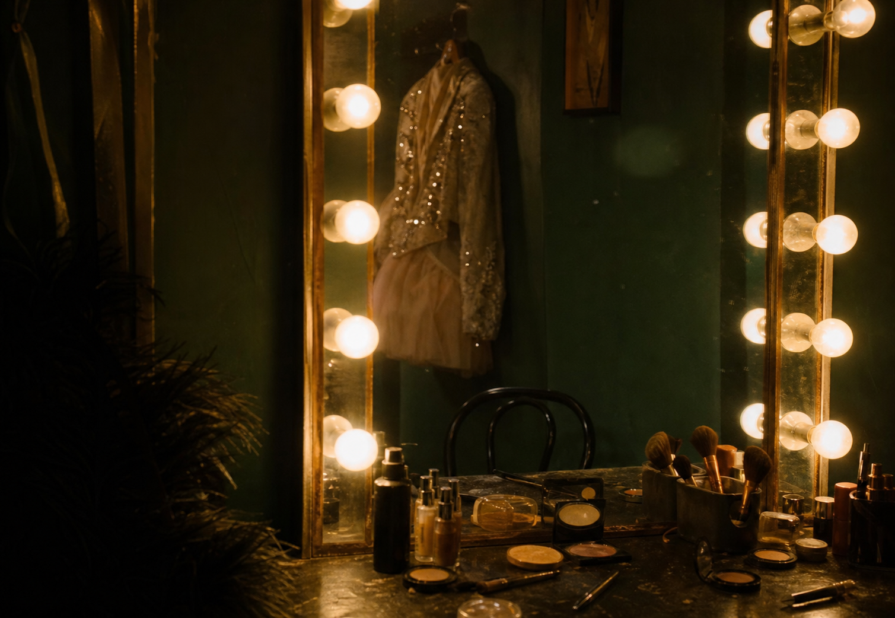